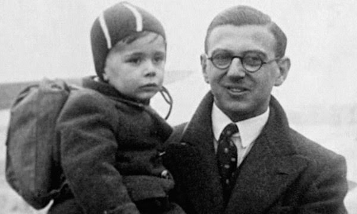
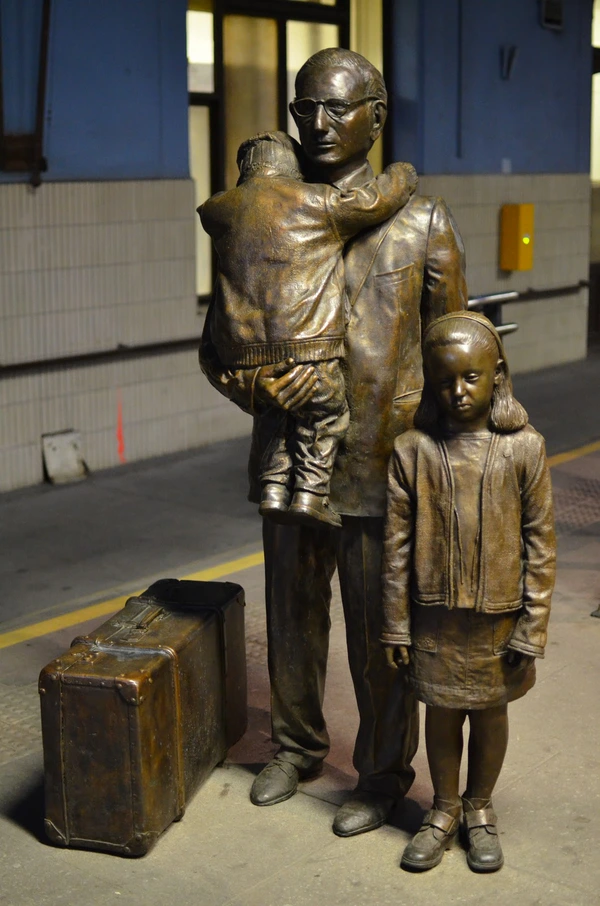

Sir Nicholas Winton (1909 – 2015)
Nicholas George Wertheim sinh ngày 19/05/1909 tại West Hampstead, London, Anh. Sau này ông đổi họ thành Winton.
Cha mẹ là người gốc Đức-Do Thái đã cải đạo sang Kitô giáo. Ông được rửa tội tại Giáo hội Anh và lớn lên trong môi trường giáo dục cởi mở.
Theo học tại Trường Stowe, sau đó học tại Đức và Pháp. Ông thành thạo tiếng Đức, tiếng Pháp và tiếng Anh — kỹ năng quan trọng cho công việc sau này.

Nicholas Winton thời trẻ (thập niên 1930) — ảnh tư liệu
Winton trưởng thành trong bối cảnh châu Âu đang chìm trong căng thẳng những năm 1930. Sau khi Đức Quốc xã sáp nhập Áo (tháng 3/1938) và vùng Sudetenland của Tiệp Khắc (tháng 9/1938), làn sóng người tị nạn — đặc biệt là người Do Thái — tràn vào Praha với hy vọng tìm được nơi trú ẩn.
Nhiều gia đình Do Thái lo sợ cho tương lai con cái họ. Họ sẵn sàng gửi con đi xa, đến một đất nước xa lạ, miễn là con họ được sống. Đó chính là mảnh đất màu mỡ cho chiến dịch giải cứu của Winton ra đời.

Tượng đồng Sir Nicholas Winton tại ga Praha, do Flor Kent điêu khắc (2009)